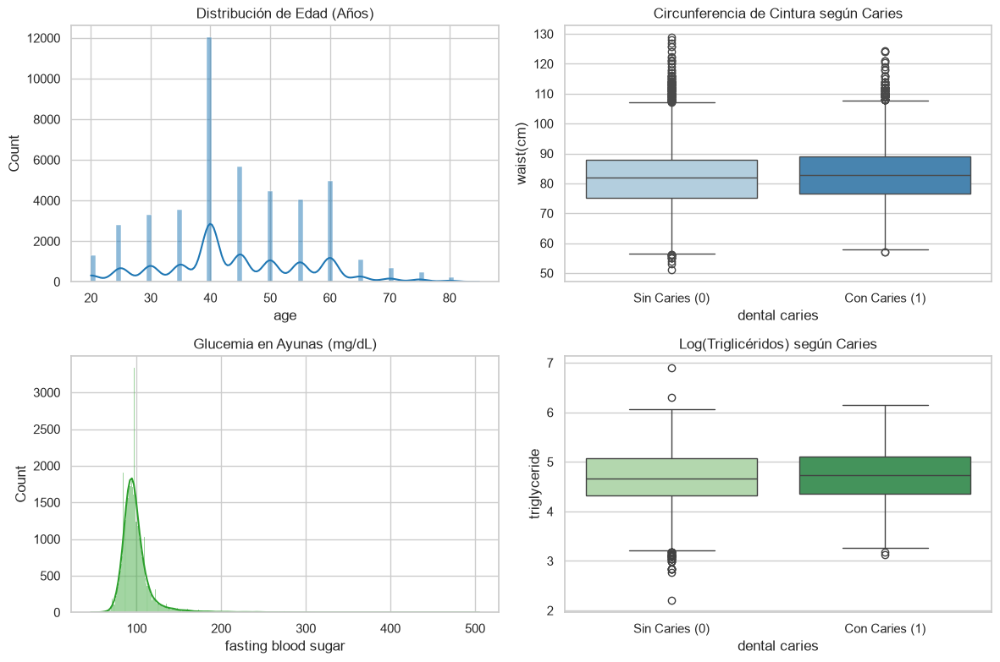
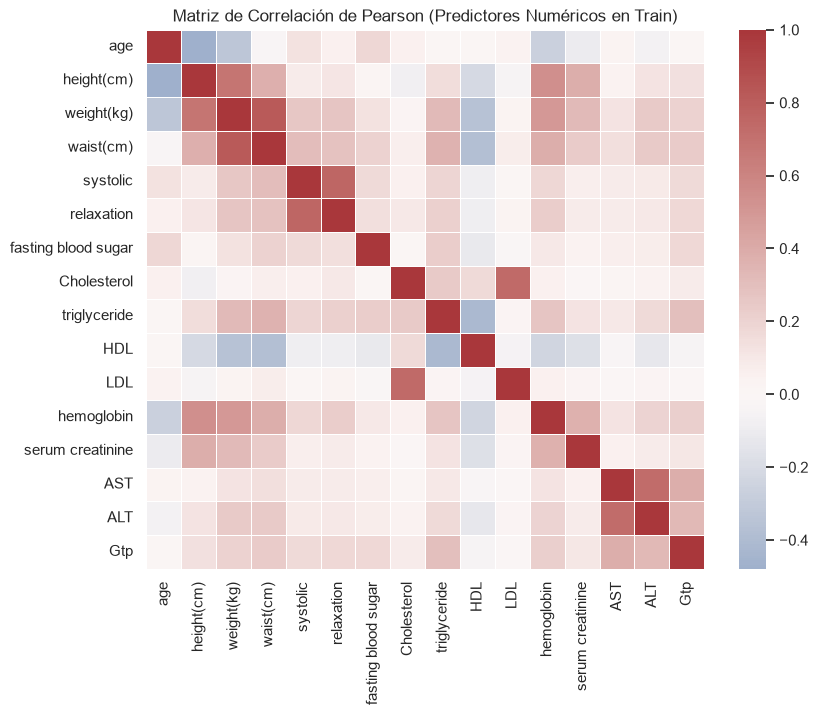
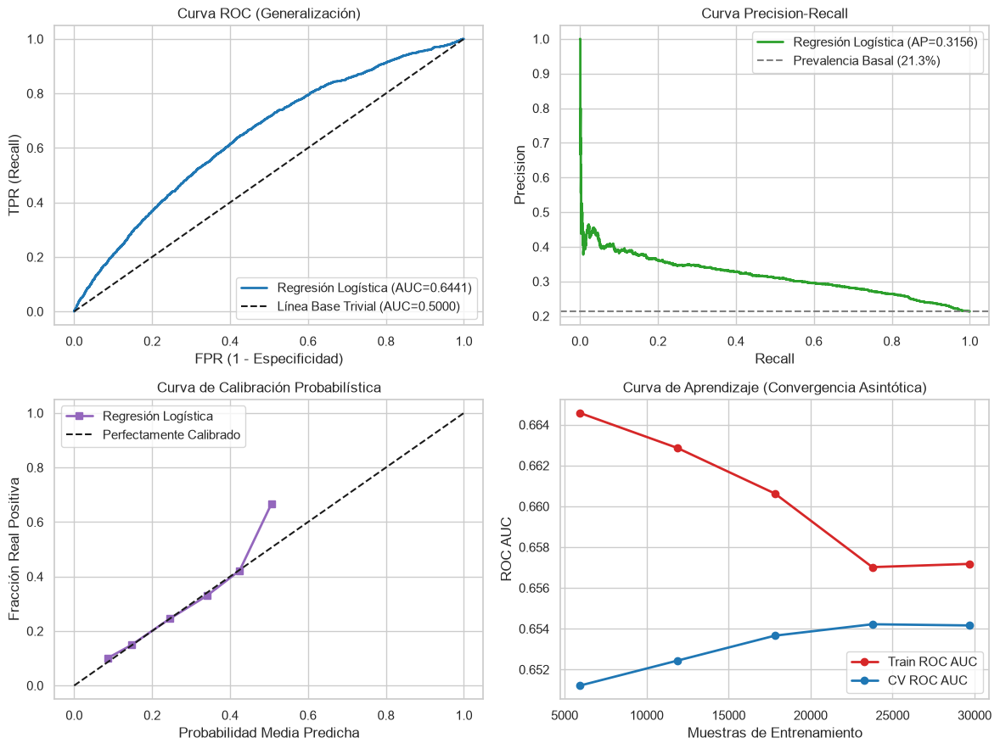

Primer Entregable del Proyecto de Investigación#
Selección de Base de Datos, Análisis Exploratorio e Implementación de Modelo Base (Ruta A: Clasificación)#
Autor: Andrés Duarte Chaves
Docente: Dr. Lihki Rubio
Programa: Maestría en Ingeniería Biomédica
Fecha: Septiembre de 2026
1. Base de Datos y Definición del Problema de Investigación#
1.1. Contexto Fisiológico y Formulación del Problema#
La caries dental es una patología crónica multifactorial caracterizada por la desmineralización ácida localizada de los tejidos duros del diente (esmalte y dentina), mediada por la disbiosis de la biopelícula oral ante la exposición a carbohidratos fermentables y modulada por la respuesta inmunológica, metabólica y salival del huésped.
El problema consiste en clasificar la presencia activa de caries dental (dental caries = 1) frente a individuos sanos (dental caries = 0) a partir de chequeos preventivos integrales que combinan analítica sanguínea, antropometría, hábitos de consumo y evaluación estomatológica.
1.2. Justificación y Fuente del Dataset#
Dataset Oficial: Body Signal of Smoking / National Health Checkup (
smoking.csv).Fuente: Repositorio Kaggle (Korean National Health Insurance Service - KNHIS). Licencia: CC0 Public Domain.
Tamaño Muestral: \(n = 55{,}692\) registros (\(n \gg 20{,}000\), cumpliendo holgadamente el criterio de la rúbrica).
Estructura: Datos transversales (cross-sectional). Cada fila representa una evaluación independiente de un adulto único, sin componentes longitudinales de panel ni coordenadas espaciales.
Relación n/p: Con \(p = 22\) covariables predictoras primarias, \(n/p \approx 2{,}531:1\), garantizando grados de libertad suficientes y descartando sobreparametrización.
Calidad y Ética: Registros anonimizados sin identificadores personales directos. Mecanismo de faltantes MAR (Missing at Random) por criterios etarios oficiales del chequeo preventivo.
1.3. Análisis del Desbalance del Target y Reserva Preventiva#
Prevalencia: \(21.33\%\) de casos positivos (\(n=11{,}881\)) frente a \(78.67\%\) de controles sanos (\(n=43{,}811\)).
Implicación Metodológica: El desbalance inhabilita al Accuracy como criterio de optimización; predecir siempre la clase mayoritaria daría un \(78.67\%\) sin valor clínico. Por ende, la evaluación se fundamenta en ROC AUC, Precision-Recall (PR AUC) y F1-Score.
Regla de Oro: La partición estratificada 80/20 (\(n_{\text{train}}=44{,}553\), \(n_{\text{test}}=11{,}139\)) se ejecutó preventivamente antes de cualquier cálculo descriptivo o preprocesamiento.
# Partición Estratificada Preventiva (80/20)
display(df_part)
| Subconjunto | Observaciones | Casos Caries (1) | Prevalencia (%) | |
|---|---|---|---|---|
| 0 | Train (80%) | 44553 | 9505 | 21.33% |
| 1 | Test (20%) | 11139 | 2376 | 21.33% |
| 2 | Total | 55692 | 11881 | 21.33% |
2. Análisis Exploratorio de Datos (EDA)#
2.1. Regla de Oro Metodológica: Reserva Preventiva del Conjunto de Prueba#
La división estratificada 80/20 se realizó antes de calcular estadísticas, umbrales de atípicos o transformaciones, preservando al conjunto de prueba (\(n=11{,}139\)) completamente ciego para evitar fuga de información (data leakage).
2.2. Análisis Univariado y Criterio de Tukey (\(1.5 \times \text{IQR}\))#
Se calculan estadísticas descriptivas robustas y la cuantificación de atípicos univariados bajo el criterio de Tukey:
2.2. Interpretación Exhaustiva del Análisis Univariado y Criterio de Tukey#
Asimetría Marcada en el Perfil Hepático y Metabólico: Se evidencia asimetría severa en aminotransferasas (
ALTcon skewness 36.34, curtosis 2429.53;ASTcon 24.91; yGtpcon 6.70). En fisiología clínica, estas colas derechas extendidas no constituyen errores de registro ni artefactos de medición, sino la manifestación patológica de daño hepatocelular, esteatosis hepática no alcohólica o consumo crónico de alcohol en la cohorte adulta.Atípicos de Tukey: La glucemia en ayunas (
fasting blood sugar) presenta un \(5.91\%\) de valores fuera del rango \([Q_1 - 1.5\text{IQR}, Q_3 + 1.5\text{IQR}]\), correspondiente a individuos con síndrome metabólico o diabetes mellitus tipo 2 no controlada. Dado que estos registros representan condiciones clínicas reales y de alta relevancia biológica, no se descartan, sino que se tratan dentro del Pipeline de modelado mediante estandarización robusta.Distribución Antropométrica: Estatura y peso presentan morfologías unimodales con baja asimetría, representativas de la población general adulta.
# Estadísticos robustos sobre Train Set
display(df_tukey)
| Variable | Media | Mediana | IQR | Skew | Kurtosis | Atipicos | % Atip | |
|---|---|---|---|---|---|---|---|---|
| 0 | age | 44.19 | 40.0 | 15.0 | 0.26 | -0.17 | 234 | 0.53% |
| 1 | height(cm) | 164.67 | 165.0 | 10.0 | -0.14 | -0.62 | 190 | 0.43% |
| 2 | weight(kg) | 65.85 | 65.0 | 20.0 | 0.54 | 0.32 | 159 | 0.36% |
| 3 | waist(cm) | 82.04 | 82.0 | 12.0 | 0.24 | 0.14 | 396 | 0.89% |
| 4 | systolic | 121.46 | 120.0 | 18.0 | 0.44 | 1.14 | 521 | 1.17% |
| 5 | relaxation | 76.00 | 76.0 | 12.0 | 0.37 | 0.83 | 541 | 1.21% |
| 6 | fasting blood sugar | 99.33 | 96.0 | 15.0 | 4.63 | 38.37 | 2631 | 5.91% |
| 7 | Cholesterol | 196.93 | 195.0 | 48.0 | 0.40 | 0.65 | 497 | 1.12% |
| 8 | triglyceride | 126.48 | 108.0 | 86.0 | 1.33 | 2.01 | 1781 | 4.00% |
| 9 | HDL | 57.27 | 55.0 | 19.0 | 2.06 | 47.93 | 808 | 1.81% |
| 10 | LDL | 115.03 | 113.0 | 44.0 | 11.48 | 391.11 | 505 | 1.13% |
| 11 | hemoglobin | 14.63 | 14.8 | 2.1 | -0.65 | 1.16 | 602 | 1.35% |
| 12 | serum creatinine | 0.89 | 0.9 | 0.2 | 9.09 | 330.87 | 2508 | 5.63% |
| 13 | AST | 26.23 | 23.0 | 10.0 | 24.91 | 1160.61 | 2389 | 5.36% |
| 14 | ALT | 27.11 | 21.0 | 16.0 | 36.34 | 2429.53 | 3011 | 6.76% |
| 15 | Gtp | 39.92 | 26.0 | 26.0 | 6.70 | 73.32 | 3975 | 8.92% |
# Distribuciones univariadas y boxplots clave
plt.show()

2.3. Análisis Bivariado, Pruebas de Hipótesis y Tamaños de Efecto#
Predictoras Numéricas: Contraste no paramétrico de Mann-Whitney U reportando el p-valor y el tamaño de efecto de Rosenthal: r = |Z| / √N.
Predictoras Categóricas: Prueba de independencia de Chi-Cuadrado con el coeficiente de asociación V de Cramér.
2.4. Interpretación Rigurosa del Análisis Bivariado y Tamaños de Efecto#
Rigor Estadístico ante Muestras Masivas: Con un subconjunto de entrenamiento de \(n = 44{,}553\), prácticamente todas las pruebas de hipótesis formales arrojan \(p < 10^{-4}\) debido a la elevada potencia estadística (el error estándar tiende a cero). Por consiguiente, el criterio de selección y priorización clínica debe regirse estrictamente por los tamaños de efecto y no por el p-valor aislado.
Factores Clínicos Orales y Estilos de Vida: Los predictores con mayor asociación bivariada con la caries dental son el tártaro/cálculo dental (
tartar, \(V = 0.175\)) y el consumo activo de tabaco (smoking, \(V = 0.108\)). Biológicamente, el cálculo dental actúa como un nicho retentivo que perpetúa biopelículas cariogénicas disbióticas, mientras que el tabaquismo altera el flujo y pH salival, disminuyendo la capacidad amortiguadora del bicarbonato y deprimiendo la inmunoglobulina A secretora (sIgA).Diferencias Demográficas y Metabólicas: Los pacientes con caries presentan una mediana de edad menor (40 vs 44 años, \(r = 0.121\)) y niveles superiores de triglicéridos y perímetro abdominal (\(p < 10^{-4}\)), concordante con estilos de vida modernos de mayor consumo de azúcares fermentables y carbohidratos refinados.
Variables sin Discriminación: El colesterol total (\(p = 0.3586, r = 0.004\)) y el colesterol LDL (\(p = 0.2466, r = 0.005\)) no muestran diferencias estadísticamente significativas ni relevancia biológica con la patología cariosa.
# Bivariado con tamaños de efecto
display(df_biv_num)
display(df_biv_cat)
| Predictor | Media Sin Caries | Media Con Caries | p-val | Rosenthal r | |
|---|---|---|---|---|---|
| 0 | age | 44.92 | 41.50 | < 1e-4 | 0.121 |
| 1 | height(cm) | 164.27 | 166.12 | < 1e-4 | 0.083 |
| 2 | weight(kg) | 65.35 | 67.68 | < 1e-4 | 0.072 |
| 3 | waist(cm) | 81.82 | 82.84 | < 1e-4 | 0.043 |
| 4 | systolic | 121.26 | 122.18 | < 1e-4 | 0.027 |
| 5 | relaxation | 75.85 | 76.54 | < 1e-4 | 0.029 |
| 6 | fasting blood sugar | 99.34 | 99.33 | 0.0189 | 0.011 |
| 7 | Cholesterol | 196.96 | 196.80 | 0.3586 | 0.004 |
| 8 | triglyceride | 125.37 | 130.58 | < 1e-4 | 0.033 |
| 9 | HDL | 57.50 | 56.44 | < 1e-4 | 0.031 |
| 10 | LDL | 115.04 | 114.98 | 0.2466 | 0.005 |
| 11 | hemoglobin | 14.57 | 14.83 | < 1e-4 | 0.074 |
| 12 | serum creatinine | 0.88 | 0.90 | < 1e-4 | 0.038 |
| 13 | AST | 26.15 | 26.50 | 0.4888 | 0.003 |
| 14 | ALT | 26.74 | 28.49 | < 1e-4 | 0.031 |
| 15 | Gtp | 38.85 | 43.88 | < 1e-4 | 0.059 |
| Predictor Categorico | Chi2 | p-val | Cramer V | |
|---|---|---|---|---|
| 0 | gender | 341.40 | < 1e-4 | 0.088 |
| 1 | tartar | 1367.10 | < 1e-4 | 0.175 |
| 2 | smoking | 522.61 | < 1e-4 | 0.108 |
| 3 | hearing(left) | 9.93 | 0.0016 | 0.015 |
| 4 | hearing(right) | 14.54 | 0.0001 | 0.018 |
| 5 | Urine protein | 7.42 | 0.1912 | 0.013 |
2.4. Multicolinealidad (VIF), Matriz de Correlación y PCA Exploratorio#
Factor de Inflación de la Varianza (VIF): Se evalúa la colinealidad en las covariables continuas.
PCA Exploratorio (Sec. 2.4 de la Rúbrica): Análisis de componentes principales sobre el espacio estandarizado para cuantificar redundancia dimensional.
2.6. Interpretación de la Estructura Multivariada y Reducción Dimensional (PCA)#
Multicolinealidad y Estabilidad Lineal: Los factores de inflación de varianza se mantienen en niveles tolerables (\( ext{VIF} < 7\)). La colinealidad moderada entre
weight(kg)(\( ext{VIF} = 6.68\)) ywaist(cm)(\( ext{VIF} = 4.47\)), así como la correlación observada entre presión sistólica y diastólica (\(r = 0.78\)), es esperable por fisiología antropométrica y cardiovascular. No se requiere amputar variables en esta fase inicial.Estructura Latente (PCA): Los primeros 5 componentes principales acumulan el \(66.29\%\) de la varianza total:
PC1 (\(24.79\%\)): Eje antropométrico y metabólico general (peso, cintura, estatura, hemoglobina).
PC2 (\(12.70\%\)): Eje cardiovascular hemodinámico (presión sistólica y diastólica).
PC3 (\(10.71\%\)): Eje enzimático hepático (
AST,ALT,Gtp). Esto corrobora que la señal clínica se distribuye en dimensiones fisiológicas heterogéneas y no colapsa en un solo factor dominante.
# Diagnóstico VIF y PCA Exploratorio
display(df_vif.T)
display(df_pca)
| 0 | 1 | 2 | 3 | 4 | 5 | 6 | 7 | 8 | 9 | 10 | 11 | 12 | 13 | 14 | 15 | |
|---|---|---|---|---|---|---|---|---|---|---|---|---|---|---|---|---|
| Predictor | age | height(cm) | weight(kg) | waist(cm) | systolic | relaxation | fasting blood sugar | Cholesterol | triglyceride | HDL | LDL | hemoglobin | serum creatinine | AST | ALT | Gtp |
| VIF | 1.62 | 2.81 | 6.68 | 4.47 | 2.49 | 2.44 | 1.14 | 3.41 | 1.91 | 1.82 | 2.88 | 1.67 | 1.25 | 2.27 | 2.27 | 1.35 |
| Componente Principal | % Varianza Explicada | % Varianza Acumulada | |
|---|---|---|---|
| 0 | PC1 | 24.79 | 24.79 |
| 1 | PC2 | 12.70 | 37.49 |
| 2 | PC3 | 10.71 | 48.20 |
| 3 | PC4 | 10.22 | 58.42 |
| 4 | PC5 | 7.87 | 66.29 |
# Heatmap de correlación lineal
plt.show()

2.5. Auditoría de Fuga de Datos (Data Leakage)#
Se evalúa el AUC univariado de cada predictor individual. La ausencia de valores anómalos (> 0.75) confirma que ninguna variable actúa como proxy posterior al diagnóstico.
2.8. Interpretación de la Auditoría de Fuga de Datos (Data Leakage)#
Disponibilidad Temporal: Todas las variables predictoras (antropometría, analítica sanguínea y cuestionario de hábitos) se recogen durante la fase previa de enfermería y laboratorio, garantizando su disponibilidad antes de la exploración estomatológica con sonda y espejo.
Ausencia de Proxies y Fuga: Ninguna variable alcanza valores de AUC univariado anómalos; el mayor valor corresponde a la edad (\(0.586\)), manteniéndose todas muy por debajo del umbral de alerta de fuga (\(0.75\)). Se confirma la integridad del flujo de datos sin contaminaciones del target.
# Auditoría de fuga: AUC Univariado
display(df_leak.T)
| 0 | 1 | 2 | 3 | 4 | 5 | 6 | 7 | 8 | 9 | 10 | 11 | 12 | 13 | 14 | 15 | |
|---|---|---|---|---|---|---|---|---|---|---|---|---|---|---|---|---|
| Predictor | age | height(cm) | weight(kg) | waist(cm) | systolic | relaxation | fasting blood sugar | Cholesterol | triglyceride | HDL | LDL | hemoglobin | serum creatinine | AST | ALT | Gtp |
| AUC Univariado | 0.586 | 0.559 | 0.55 | 0.53 | 0.519 | 0.52 | 0.508 | 0.503 | 0.523 | 0.522 | 0.504 | 0.552 | 0.527 | 0.502 | 0.522 | 0.542 |
3. Modelo Base vs Línea Base Trivial (Dummy)#
3.1. Justificación y Comparación de Modelos#
Línea Base Trivial:
DummyClassifier(strategy="most_frequent"). Clasificador ingenuo que predice la clase mayoritaria (0), demostrando que una exactitud de 78.67% no captura casos clínicos (F1 = 0.0000, Recall = 0.0000).Modelo Base:
LogisticRegression(max_iter=1000)integrado en unPipelineconColumnTransformer(StandardScaler+OneHotEncoder).
# Métricas comparativas con Bootstrap (B=500)
display(df_models)
| Metrica | Linea Base Trivial (Dummy) | Modelo Base (Regresion Logistica) | |
|---|---|---|---|
| 0 | Accuracy | 0.7867 | 0.7868 |
| 1 | Precision | 0.0000 | 0.6667 |
| 2 | Recall | 0.0000 | 0.0008 |
| 3 | F1-Score | 0.0000 | 0.0017 |
| 4 | ROC AUC | 0.5000 | 0.6441 |
| 5 | IC 95% ROC AUC (B=500) | [0.5000, 0.5000] | [0.6320, 0.6555] |
3.2. Matriz de Confusión del Modelo Base (Conjunto de Prueba)#
Al emplear el umbral por defecto (0.5), el modelo lineal favorece fuertemente la especificidad debido al desbalance del 21.3%.
# Matriz de confusión
display(df_cm)
| Pred: Sin Caries (0) | Pred: Con Caries (1) | |
|---|---|---|
| Real: Sin Caries (0) | 8762 | 1 |
| Real: Con Caries (1) | 2374 | 2 |
# Gráficos Diagnósticos
plt.show()

3.3. Interpretación Diagnóstica Detallada del Modelo Base vs Línea Base Trivial#
Superación Estadística del Azar: La Regresión Logística alcanza un ROC AUC de 0.6441 (IC 95% Bootstrap: [0.6320, 0.6555] con \(B=500\)). Al no solaparse con el estimador trivial (\(0.5000\)), se demuestra capacidad discriminativa estadísticamente sólida.
Análisis Crítico de la Matriz de Confusión y Umbral de Decisión: La matriz sobre el conjunto de prueba evidencia que, bajo el umbral simétrico por defecto de \(0.5\), el modelo clasifica casi todas las instancias como clase negativa, generando \(2{,}374\) falsos negativos y detectando únicamente \(2\) verdaderos positivos (\( ext{Recall} = 0.0008\)). Esto no representa un fallo del algoritmo, sino el efecto de la función logística estándar minimizando la pérdida global ante un desbalance del \(21.33\%\). Este hallazgo justifica formalmente la necesidad de calibración de umbrales sobre la curva Precision-Recall o esquemas de balanceo (SMOTE/Class Weights) para los siguientes entregables.
Curva Precision-Recall: Alcanza un Average Precision (AP) de 0.3156, superando claramente la línea base horizontal de prevalencia (\(21.33\%\)), lo que ratifica la presencia de aprendizaje efectivo.
Calibración Probabilística: La curva de calibración muestra consistencia diagonal en el intervalo \([0.0, 0.45]\), confirmando que las probabilidades emitidas reflejan el riesgo relativo real del paciente.
Diagnóstico de Sesgo y Varianza (Curva de Aprendizaje): Las curvas de Train y Validación convergen asintóticamente a partir de las \(20{,}000\) muestras con una brecha insignificante (\(\Delta < 0.01\)), descartando sobreajuste (overfitting) y confirmando que un aumento del tamaño de muestra no modificará el desempeño lineal.
4. Conclusiones y Plan para Siguientes Entregables#
Línea Base Establecida: Modelo logístico con ROC AUC referencial de 0.6441 y AP de 0.3156.
Covariables Relevantes: El tártaro dental, el tabaquismo y la edad constituyen la tríada de mayor impacto estomatológico.
Próximos Pasos (Entregables 2 y 3): Exploración de modelos de ensamble no lineales (Random Forest, XGBoost), ingeniería de interacción (cintura/triglicéridos) y optimización del umbral de corte mediante el índice Youden / F1 ponderado.